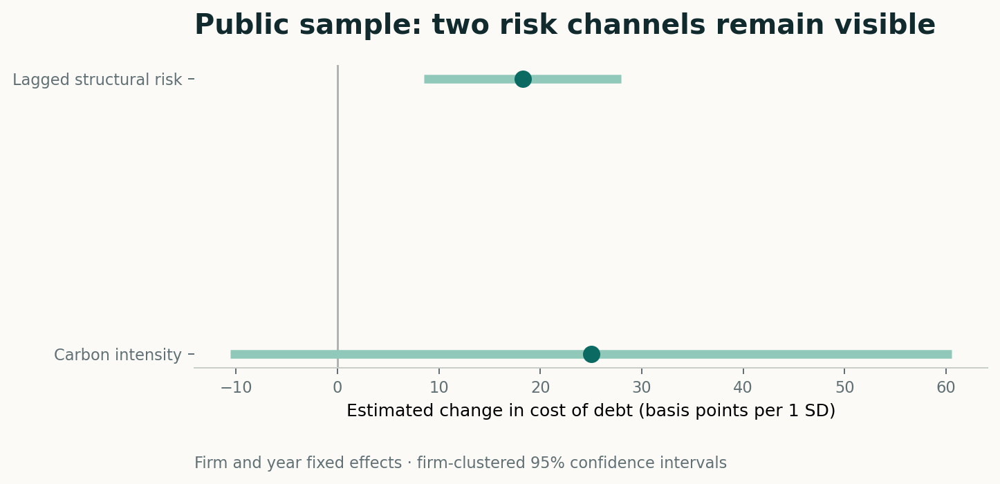
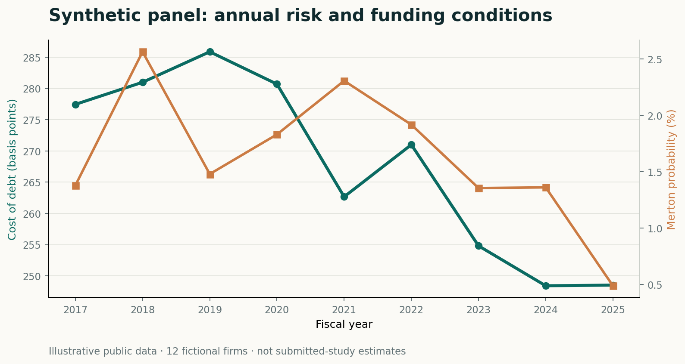
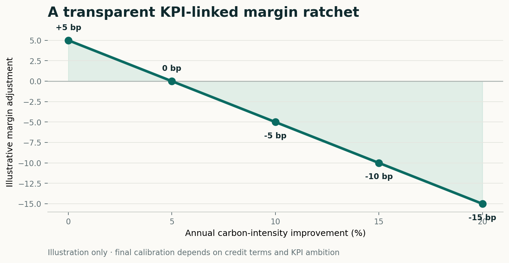

Credit-risk channel
탄소규제는 비용과 자산가치에 영향을 주고, 그 충격은 Merton 구조모형의 부도확률을 통해 조달금리에 반영될 수 있습니다.
RegulationPDSpread
DB Insurance & Finance Competition · Portfolio
해운기업의 탄소규제 위험은 부도위험을 통해서만 가격화될까? 구조적 신용위험과 독립적인 탄소 프리미엄을 분리하고, 그 결과를 지속가능연계대출 설계로 연결했습니다.
Two channels.
One financing decision.
01 · Research question
탄소규제는 비용과 자산가치에 영향을 주고, 그 충격은 Merton 구조모형의 부도확률을 통해 조달금리에 반영될 수 있습니다.
대주단은 구조적 부도위험이 포착하지 못하는 전환비용·담보가치·규제 불확실성을 탄소집약도에 별도로 가격화할 수 있습니다.
02 · Empirical architecture
재무·주가·무위험금리·ESG·탄소 데이터를 ISIN과 연도로 결합
관측된 주식가치와 변동성으로 자산가치·자산변동성과 Merton PD 추정
기업·연도 고정효과와 군집표준오차로 신용위험과 탄소위험을 함께 검증
탄소집약도 개선과 선박 CII 성과를 투명한 금리 조정표로 연결
03 · Findings
연구 원고는 시차를 둔 구조적 부도위험과 탄소집약도가 자본비용에 서로 다른 정보를 제공할 가능성을 제시합니다. 아래 그래프는 공개 코드의 작동을 보여주는 합성 데이터 결과입니다.


Interpretation
“A raw slope and a within-firm estimate are not the same object.”
단순 산점도와 고정효과 회귀의 부호가 달라질 수 있음을 명시하고, 표본 변화와 조건부 해석을 문서화했습니다.
04 · Product translation
추상적인 ESG 약속이 아니라 측정 가능한 탄소성과와 선박 운항효율을 금리에 연결합니다. KPI 정의, 목표 난이도, 보고경계와 외부검증을 계약 단계에서 함께 고정하는 구조입니다.
전년 대비 개선률을 사전 정의된 매출·배출량 경계로 측정
적용 선박의 CII 등급과 개선계획 이행 여부를 함께 반영
연례 보고와 외부검증으로 KPI 왜곡과 그린워싱 위험을 축소

05 · Open work, responsible disclosure
Merton 산식, 패널 회귀 코드, 테스트, 합성 표본, 시각화와 방법론
Bloomberg·LSEG·WRDS 원자료, 개인정보, 타인 논문과 저작권 자료
합성 결과와 원고 결과를 분리하고 인과추론이 아닌 조건부 연관으로 해석
Team Deoksang · Sungkyunkwan University
Jaewon Kim · Hong Kim